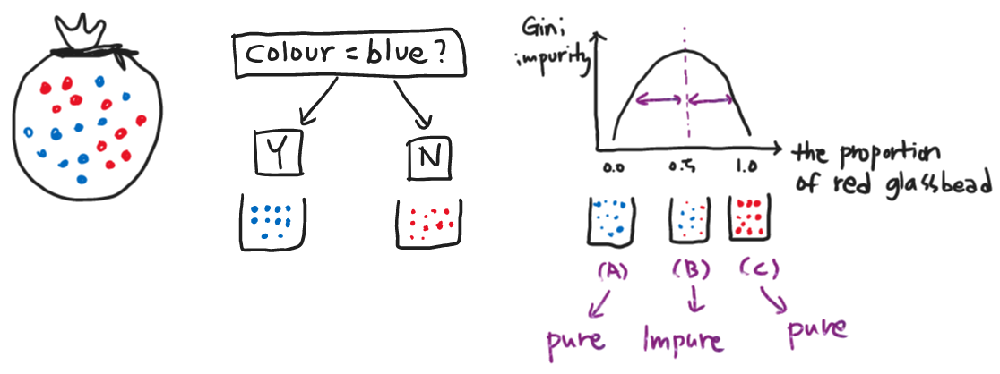
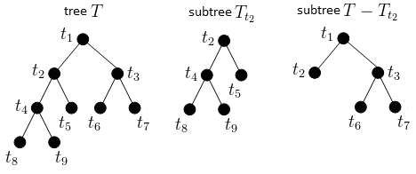
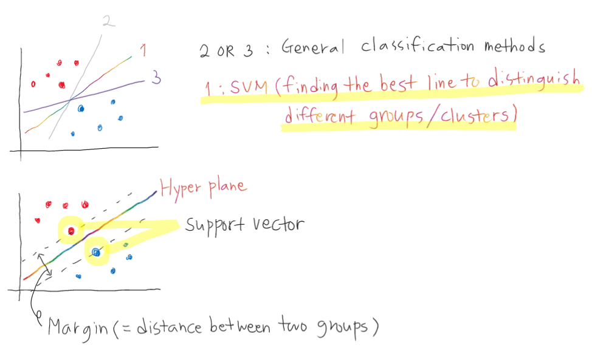
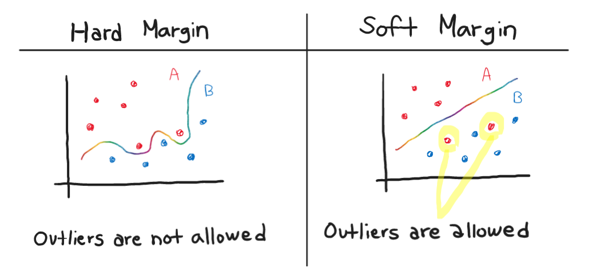
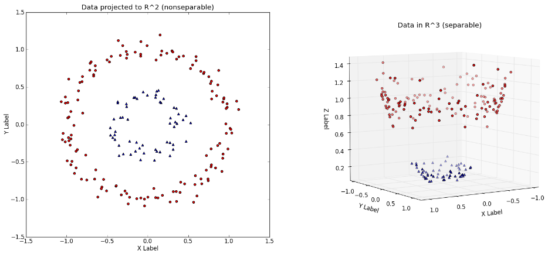
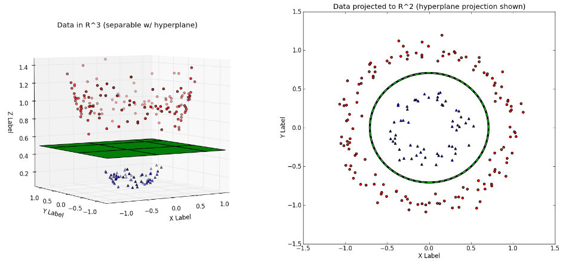
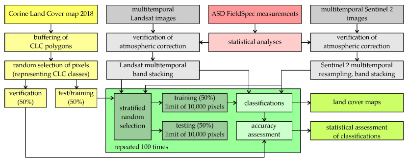
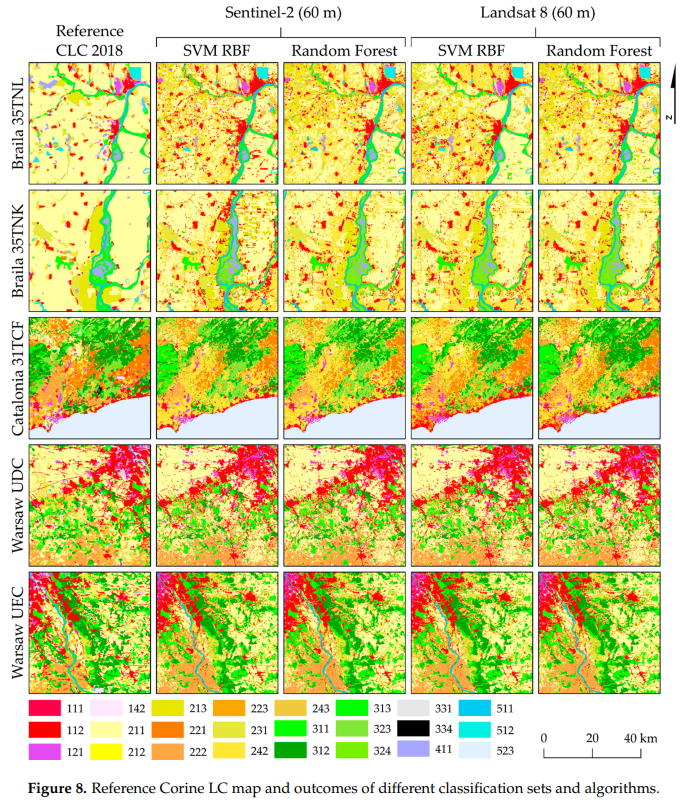

6. Classification I
This is a learning diary for week 6.
Let’s find out how to analyse remotely sensed images, especially Land Use/Land Cover(LULC), with various ways!
6.1 Summary
6.1.1 How do we know? 🤔
Your intuition! We can make judgments or conclusions about specific knowledge from our experience. It is called inductive learning and can be leveraged to analyze remote-sensing images.
6.1.2 How does my computer know? 🤖
Like using human knowledge, machine learning methods (Training data 70% : Testing data 30%) based on decision trees are used to be learned how to find specific patterns in remote sensing data so that computers can judge themselves.
6.1.3 Different methods of classification
6.1.3.1 Classification trees
- Classify data into two or more discrete categories
- We cannot only know the prediction results but also explain why we predicted that.
- Output variable is categorised such as sex, nationality or position in the company.
- It is like playing the guessing game ‘Who am I?’
- When creating a decision tree, the final leaves might be a mixture of the categories = impure
- Need to quantify the result with the Gini Impurity
- Top-down approach
6.1.3.2 Regression trees
Decision Tree model with regression
It predicts results based on the predictors that best reduces the Sum of the Squared Residuals(SSR). = similar to Gini Impurity
- Output variable is continuous variable such as salary, weight or width.
Bottom-up approach
6.1.4 How to prevent overfitting of results?
6.1.4.1 Weakest link pruning
- There are two parameters: depth and node.
- After making a large tree (20 is often used) by increasing the depth and nodes, prune the subtree again and select it as a model.

6.1.4.2 Random forest
- One of the ensemble machine learning model.
- Grow loads of random decision trees like a forest!
- All decision trees are grown by randomly extracting sub-datasets.
- Bagging : a single data may be selected multiple times as it allows redundancy.
- And find the overall value which got more votes based on all the trees.

6.1.5 Three types of Image Classification
| Supervised Classification | Unsupervised Classification | Object-Based Image Analysis |
|---|---|---|
| Pattern recognition or machine learning | clustering | Week 7_7.1.2 OBIA |
| Parametric (normal distribution) : Maximum likelihood | k-means | |
| non parametric (not normal) : Support Vector Machine | ISODATA | |
| cluster busting = masking (removing unsuitable clusters) |
6.1.5.1 Maximum Likelihood Eastimation (MLE)
- Likelihood : To see what probability is in a distribution existing an event or phenomenon
- MLE : Find the maximum likelihood that best describes a given data
- Takes the image(landcover) and assigns pixel to the most probable land cover type.
6.1.5.2 Support Vector Machine (SVM)
- Used primarily for classification (pattern recognition) and regression analysis
- SVM maximises the space between the two categories, compared to general classification methods minimise the error rate.

- Two types of SVM

The Kernel trick
- Solve problems by converting them from low dimensions (2D) to high dimensions (3D)


6.2 Application
According to (Dabija et al. 2021), European Union(EU) manages the land cover information using CORINE Land Cover(CLC).
What is CORINE Land Cover(CLC)?
The ‘Coordination of information on the environment’ (Corine) is an inventory of European land cover split into 44 different land cover classes. Source : EEA
In 2021, two ML algorithms were tested when analysing remote sensing data in Catalonia, Poland, and Romania using images of Sentinel-2 and Landsat 8: Random Forest(RF) and Support Vector Machine (SVM)
The workflow of this work is as below.

As a result, the Support vector machine algorithms using radial kernel functions (SVM RBF) have obtained significant results in all research areas.
Also, overall, changes in vegetation by region (e.g. noticeable changes in vineyards and fruit trees share in the area of Catalonia) and tree species could be found, and they were well classified by each category.
SVM RBF was the best classifier, followed by RF in this research.

6.3 Reflection
- The key to what we learned this week is that each classification method essentially slices the data differently.
- It was interesting that the ML technique was used to analyse the remote sensing data. In particular, it was amazing that the SVM method separates data using hyperplane, going further from the existing classification methods.
- It still takes work to fully understand the mathematical principles of each classification method (which makes me feel dizzy every time I learn it 🙄). However, it was worth remembering that the criteria that we intuitively thought and classified were developed for computers and applied for.